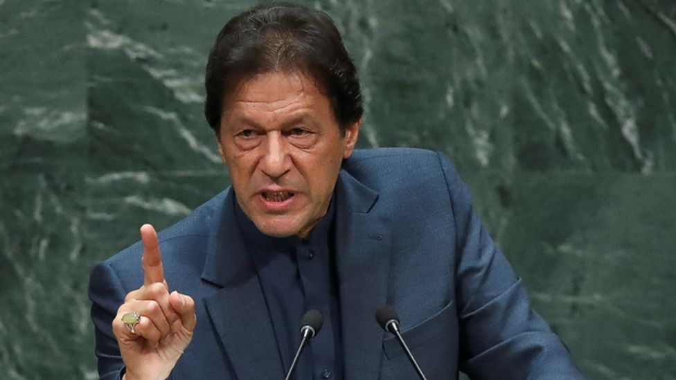

 In the ups and downs of life, some forces of life keep us moving, in the darkest hour of every night, there is always a candle, burning midnight oils to enlighten the darkness and prepare to welcome the glim and glow of morning, In fall, there is a nightingale who sings euphonious songs along with the mesmerizing melodious sound of falling leaves and keep on reminding the life around him that this season is a preparation for hosting new life. These are the answers to the questions people often ask me about my love, dedication, and support for Imran khan and faith in his abilities as a leader. My devotion is a two-layered phenomenon; spiritual and political, based upon the different arguments and their relation to the different aspects of life. It may not be the case with everyone but those who are spiritually minded and has an idealistically realistic approach towards life and who want their names to be written on the golden pages of history and be remembered after their death as those to whom humanity could look up in the age of turmoil and disaster. First among the two layers is the spiritual one which is way stronger and bonded with the soul. Imran Khan has always been a wanderer of spirituality which, as he has mentioned in his book, has empowered him to tackle down the challenges of life and provided him with a new and different way of looking at life. I feel a spiritual connection with him because in every spell of depression, in each attack of anxiety, and in the nights of despair, I found his words and life a torch of light and beacon of hope. The way he made it back to the cricket and touched the highest skies after the worst performance in his very debut test match was always a magnet of success in my every failure. His decision to be a fast bowler even after the negative remarks and judgments of both public and experts and then proving them wrong with his unshakable determination and unbreakable confidence, was there for me to look at each time while doing something that everyone told me I would not be able to make it. The epitome of service to humanity, the class of devotedness, a medical and economical miracle, the strongest sign of common lot's faith in Imran khan, a cenotaph of his mother and a memorial of love Shaukat Khanum Cancer hospital, remained unrivaled among all the charity works done so far in the country. This work of Imran khan is more than enough to draw inspiration and motivation for a life that can be spent with a purpose and end with something meaningful.